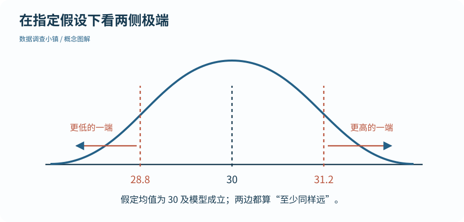

第 28 节 · 抽样公园
先提出假设，再看数据
一个小 p 值，到底反对了什么？
说明零假设、双侧极端性和 p 值；区分证据强度与效应大小。
本节目录
运行位置：打开练习包内的 r-lab.Rproj，在项目根目录运行本节脚本。安装与准备见第 02—04 节；第 13 节说明扩展包。
先搭一个可以被比较的世界
零假设在本例中是“总体均值为 30”。为了直观看清 p 值，我们还明确假定正态模型、总体标准差已知为 3、每份样本有 20 个独立观察。这里的已知标准差是演示设定，下一节真实形式的两组比较不需要你假装知道总体标准差。
现在给定一个演示用的样本均值 31.2，问：如果零假设与这些模型条件成立，得到离 30 至少这么远的均值有多常见？
图解 · 在指定假设下看两侧极端

示意以 30 为中心，均值 31.2 距它 1.2，因此双侧也计算不高于 28.8 的一端。实际概率由本节 R 代码计算。
放大查看 ↗ 保存 SVG ↓# 数据调查小镇 · 第 28 节
# 在 r-lab 项目根目录运行；输出只写入 results。
# 演示假设成立时，样本均值仍会波动。这里特意设定已知总体标准差 3。
set.seed(28)
null_means <- replicate(10000, mean(rnorm(20, mean = 30, sd = 3)))
observed_mean <- 31.2
# 双侧：离 30 至少同样远；这不是“零假设为真的概率”。
simulated_p <- mean(abs(null_means - 30) >= abs(observed_mean - 30))
exact_p <- 2 * pnorm(-abs(observed_mean - 30) / (3 / sqrt(20)))
print(round(c(simulated_p = simulated_p, normal_model_p = exact_p), 4)) simulated_p normal_model_p
0.0746 0.0736双侧是同时看两头
31.2 与 30 相差 1.2。双侧比较同时把不低于 31.2 和不高于 28.8 的结果视为至少同样极端。代码通过绝对距离计数；pnorm() 用本例已知的正态模型计算相应概率。
模拟估计与模型值可能略有差异，因为模拟只有有限次。pnorm() 是分布函数工具，不代表任何数据都适合这个正态例子。使用公式前，要先把它对应的世界说清楚。
p 值描述一个条件下的概率
p 值是在零假设及相关模型条件下，统计量至少与观察结果同样极端的概率。它不是“零假设为真的概率”，也不是“这个结果纯属偶然的概率”。小 p 值表示数据与指定模型中的零假设较不相容，但不能单独指出是零假设还是其他条件出了问题。
显著性水平例如 0.05，是预先设定的长期错误率控制规则的一部分，不是观察到 0.049 就突然发现真理、0.051 就毫无信息的开关。
还要问变化有多大
样本很多时，很小的效应也可能有很小的 p 值；样本很少时，值得关注的差异也可能不够精确。报告应同时给出效应大小、区间、样本量和设计。不要反复尝试不同分组、指标或方向，只保留最小的 p 值。
若同时检验许多问题，多重比较会改变误报风险，需要相应设计和方法。首版主线先围绕预先说明的少量问题学习，不用一串星号代替分析。
动手试试
读懂一个不显著结果
p 大于 0.05，是否证明两组完全相同？应该再看什么？
给我一点提示
证据不足与差异为零是不同结论。
查看参考解法与解释
不能证明相同。还要看差异估计、置信区间、样本量及研究设计；区间较宽可能仍与有实际意义的差异相容。
带走这一点
p 值依赖零假设、模型和预先确定的比较方向，不是“零假设为真”的概率。下一节把这套思路放进两组独立装置的实验，同时报告差异大小、区间和 p 值。
检查一下理解
p 值是零假设为真的概率吗？
查看解释
p 值的条件方向不能倒过来解释。